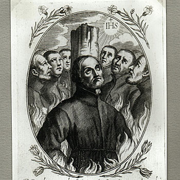

Isusovački blaženici
Vjeroučitelj · Mučenik
Bl. Petar Sampo
oko 1580. – 1622.
Nakon službe japanskim velikašima upoznao je kršćansku vjeru i postao vjeroučitelj. Progonstvo ga nije odvratilo od povratka i skrovite službe kršćanima.
Tekst je preveden i prilagođen uz pomoć umjetne inteligencije.

Izvor slike
- Spomendan
- 10. rujna
- Zaštitništvo
- Nije navedeno u izvoru
- Životni vijek
- oko 1580. – 1622.
- Djelovanje
- Obrazovanje i poučavanje vjere · Obraćenje i novi počeci · Progoni i progonstvo · Mučeništvo
- Razdoblje
- 16., 17. stoljeće
- Mjesto rođenja
- Oshu, Japan
- Datum smrti
- 10. rujna 1622.
U kalendaru zbirke koristi se dan smrti. Taj datum nije zasebna potvrda liturgijskoga spomendana.
Životopis
Petar Sampo rođen je oko 1580. u japanskom Oshu. Preselivši se u središnji Japan, stekao je položaj u službi velikaša. Kršćanin je postao nakon dolaska u Hiroshimu. Poslije je služio gospodaru Hokija, a po njegovoj smrti otišao u Nagasaki.
Ondje je obrijao glavu i sagradio skromnu kuću uz isusovački novicijat. Susjedov poticaj otvorio mu je put prema vjeroučiteljskoj službi. S isusovcima je otišao u progonstvo, ali se vratio u Japan i potajno nastavio naviještati vjeru. Pridružio se planinskoj zajednici Antonija Kyunija.
Njegov put završio je zatočenjem i mučeništvom sa skupinom Karla Spinole 10. rujna 1622. Osobni prikaz pokazuje nekoliko promjena načina života: od službe velikašima preko obraćenja i povučenoga boravka do pomaganja progonjenim kršćanima.
Zajednički povijesni okvir. Campbellova povijest Družbe iz 1921. opisuje kako su zatočenici povezani sa Spinolom, premda izloženi gladi i vremenskim nepogodama, ostali povezani molitvom i redovničkim odgojem. Spinola je u zatvoru primao novake. Taj se opis odnosi na skupinu; ne daje pravo izmišljati Sampove posljednje riječi. Njegova pojedinačna biografija čuva prije svega put domaćega obraćenika koji je postao suradnikom misije.
Tekst je preveden i prilagođen uz pomoć umjetne inteligencije.
Pročitaj više na izvornoj stranici ↗